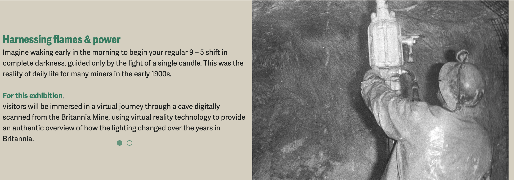

PROJECT / 04
Scanning
the Globe
Role
Installation artist.
Project type
Exhibition / interactive artwork.
Date
2026
This exhibit was in partnership with the Britannia Mine Museum and hosted at the School of Image Arts
Scanning the Globe is a historical preservation project that utilizes 3D scanning techniques to immortalize artifacts, environments and stories digitally.
The installation I built for the exhibit is named Evolution of Lighting; a VR installation that allowed viewers to experience first hand the evolution of lighting technology in mines, all from the perspective of a Britannia miner

Hover To Play ↗
Hover To Play ↗
Hover To Play ↗